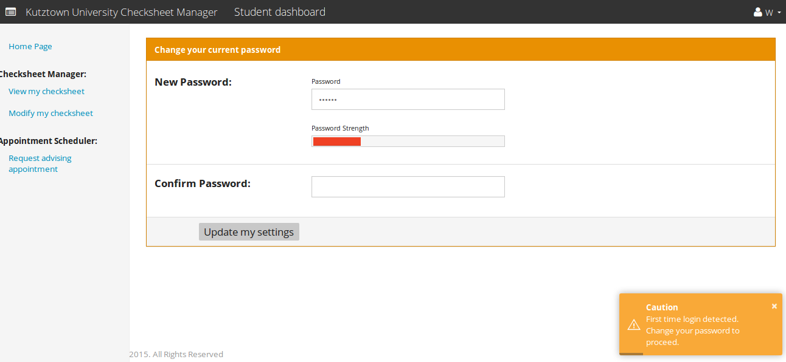
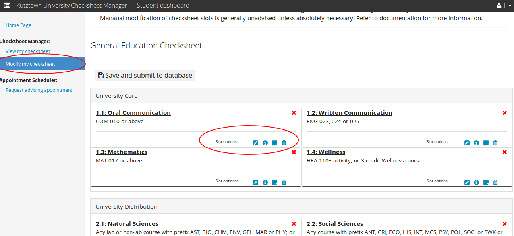
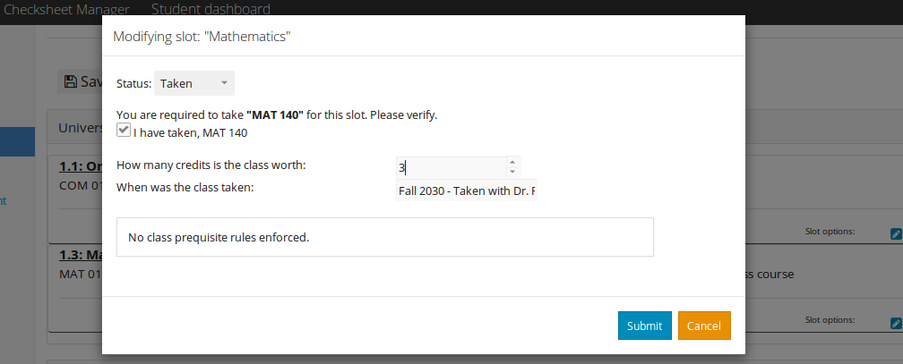
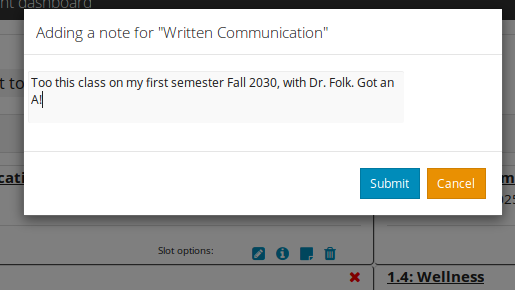
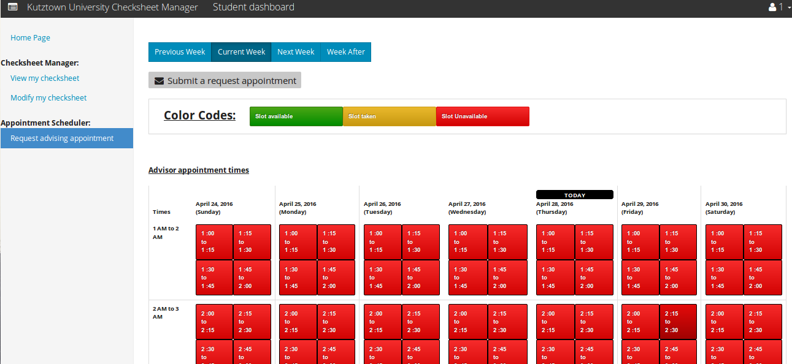

Student Dashboard¶

- First Time Login
Student’s are required to change their password during their first login.
- Updating their checksheet
Students can click on “modify my checksheet” option on the left, and pick their checksheet to start modifying their checksheet. Students may do so by choosing one of the four “slot options” higlighted in the image.
The first option lets student modify the slot. Once a student has decided to enrolled in a class or already enrolled in the class they can modify their slot to change the status of the empty slot to “taken”.
The second option simply provides information (class pre-requisite requirements and other rules) of the slot.
The third “note”, option simply lets you add notes to the slot. This can be anything, the name of professor you took the class with, your grade in the class etc.
The fourth and final delete option simply resets the slot back getting rid of the slot note & “taken” status.
Lastly students can also, request appointment with their advisor by chossing the last option on the right menu. This will bring up a page from where students can reserve open time slots provided by their advisors.
If you have any further question regarding the user interface, contact your advisor or department head.